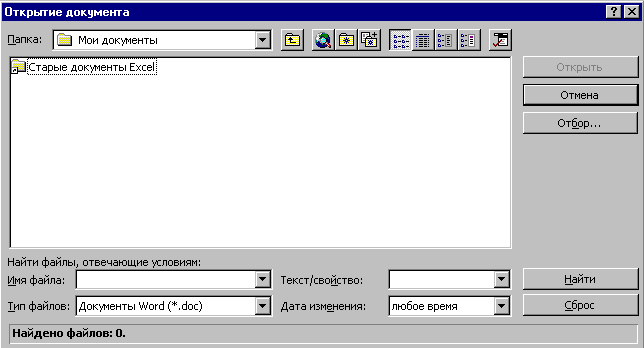

1.2 Открытие файла на жестком диске или в сети
- Щелкните по кнопке
Office
в левой верхней
части окна. Выберите команду Открыть.
- В поле "Папка" окна "Открытие
документа" выберите диск и папку, где
находится файл, который нужно открыть.
- В списке папок дважды щелкните папку, в которой
находится нужный документ.
- Дважды щелкните документ, который нужно
открыть.

Чтобы открыть документ, созданный в другой
программе, выберите соответствующий формат из
списка Тип файлов, а затем дважды щелкните
имя документа в списке. Кроме того, расширение
имени файла можно указать в поле Имя файла;
например, чтобы найти текстовые файлы, введите
*.txt.
Назад | Содержание
| Вперед